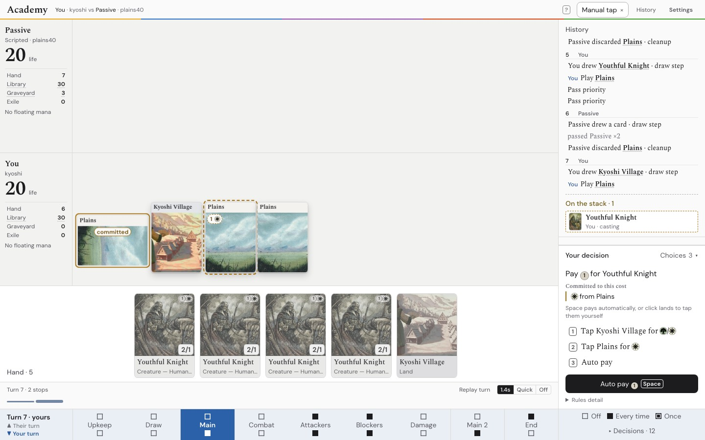
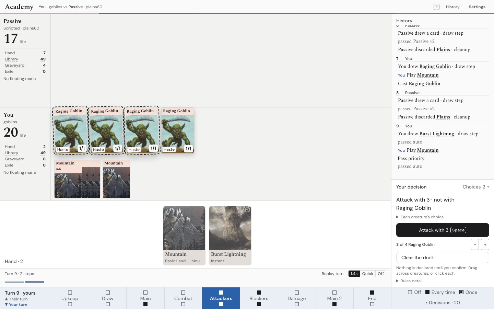
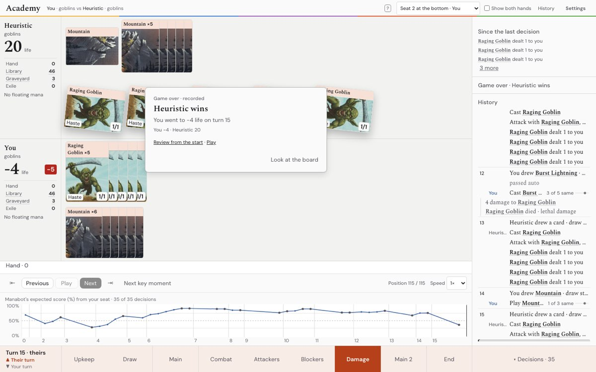

MTG-487 QA
Second pass, after Passes 6–8 (decision_group alignment, SubjectRef aliases, action-aware Offer.source, recorded villain frames). Real Academy launches (managym academy play / watch / replay) on the release extension rebuilt from 8e4e2df37a and a fresh static SPA, driven with Playwright at 1440×900. Clicks went only to board cards and offer rows.
| Scenario | Result |
|---|---|
| Two Plains in hand → one “Play Plains”; click the alias copy | works |
| Four Youthful Knights → one cast; click the fourth copy | works |
| Manual payment, Kyoshi Village + 3 Plains at {1}{W} | 3 offers, as planned |
| Tap an alias Plains, reload mid-payment, tap the remaining alias | works, Knight resolves |
| Attack drafts of 1, 2, 0, 3 identical goblins on copies the engine wasn't asking | exact counts, one grouped command each |
| Block dragged onto an alias attacker | works |
| Burst Lightning on an alias goblin | works |
| Review a finished Play game | 115/115, final board = recorded |
| Recorded frames for the bot seat carry aliases (Pass 8) | Play and Watch |
| Cleanup discard from eight identical Plains (not reached last pass) | no prompt |
| Elemental self-play recorded game in Academy replay | 721/721 |
1 · Hand copies works
14 Kyoshi Village / 10 Plains / 16 Youthful Knight against 40 Plains, passive, seed 11. Turn 1 offers [Play Kyoshi Village, Play Plains, Pass priority], Plains on copy 58 with alias 65 (now a SubjectRef, {kind: object, id: {entity: 65}}). Clicking 65 sent offer 1; a Plains entered. Later, four Knights in hand were one Cast Youthful Knight (aliases 69, 80, 75); clicking copy 75 sent offer 0.
2 · Manual payment works
Auto-tap off. The cast stopped at Tap Kyoshi Village for {G}/{W}, Tap Plains for {W} (subject 82, aliases 84, 85), Pay the cost. Clicking 85 sent offer 1 and the engine tapped 82. After a page reload the Plains offer was on 84 with alias 85; clicking 85 tapped 84 and the Knight resolved. No rejections.


3 · Attack drafts works
22 Mountain / 30 Raging Goblin / 8 Burst Lightning against 60 Plains, passive, seed 5. Each draft clicked copies other than the one being asked, then confirmed. Confirms now travel as one decision_group_command (zero plain commands). Read from canonical_replay.decisions:
draft 1 (clicked 127) 129 attack · 127 no · 124 no → 1 attacker draft 2 (clicked 134,132) 136 attack · 134 attack · 132 no · 129 no → 2 draft 0 136 no (the rest pruned) draft 3 (clicked 136,134,132) 140 no · 136 · 134 · 132 attack · 129 no → 3
Opponent life went 20 → 19 → 17 before the third attack, as drafted. The goblin cast that turn (140) remains a separate class and gets its own prompt.

4 · Blocks and targets works
Goblins mirrored against heuristic, seed 5. The block stop offered Block … (choice 127, target 132, aliases [130]), Block … (target 124), do not block. After Pass 7, block subjects are choice:blocker, target:attacker and aliases name attackers. Dragging blocker 127 onto alias 130 drafted “Raging Goblin on Raging Goblin”. The grouped plan named attacker 130, the engine accepted it, and nothing was rejected.

Later, Burst Lightning offered Target Raging Goblin on 124 (aliases 130, 148), on 157 (its own class), and on the hero's five goblins. Clicking 148 sent offer 2 and killed 124, the copy the engine names.

5 · Records works
The block game ran to game over. “Review this game” replayed it to position 115/115, ending on the same game-over board.

Pass 8: in that Play trace, 8 of the heuristic seat's 43 recorded frames carry aliases. A managym academy watch --player heuristic --player heuristic game on the same decks ran to game over, with aliases on 10 of seat 0's frames and 9 of seat 1's.

etude train manabot/recipes/elemental.py --config '{"updates": 2, "streams": 4, "record_games": 1, "statistics": true}' finished (outcome.json state finished, 0 dropped) and recorded 12 games. managym academy replay … --game 3 walked 721/721 positions (360 decisions) with no divergence.
6 · Discard from identical cards works
60 Plains against 60 Plains, passive, seed 3, passing every priority. The hand reached 8 Plains and cleanup put one in the graveyard without a prompt. Every priority stop showed one Play Plains.
Carried over, not rerun
A record from before this change stops at decision 0 with a digest mismatch. That was shown last pass against hash v32; the change is now v34 and the cause is the same. The fix that wraps the reason text is still in replay/+page.svelte.

Not reached
- Attacking a planeswalker (
Offer.sourcenames the attacker): none of these decks has a planeswalker. The Rust testattack_offers_name_the_attacker_as_source_whatever_the_defendercovers it. - Convoke/waterbend taps and cost-component picks (sacrifice, crew, delve): none of these games reached them.
Harness notes (no product change)
- The table now keeps a hidden Rematch inside the closed Settings menu, so the old
button:has-text("Rematch")end check fired at once. Use:visible. Written into.lf/qa/academy.md. - Aliases are
SubjectRef.alias.id.entityis the board'sdata-object-id.